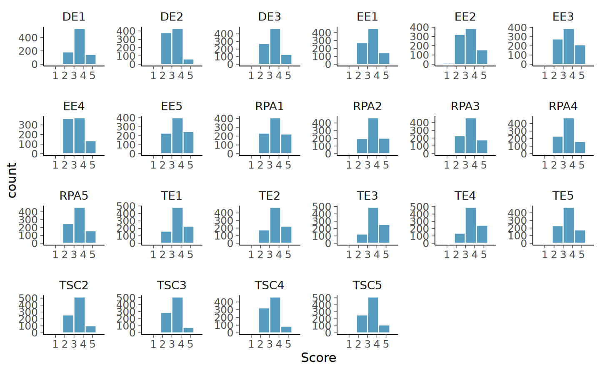
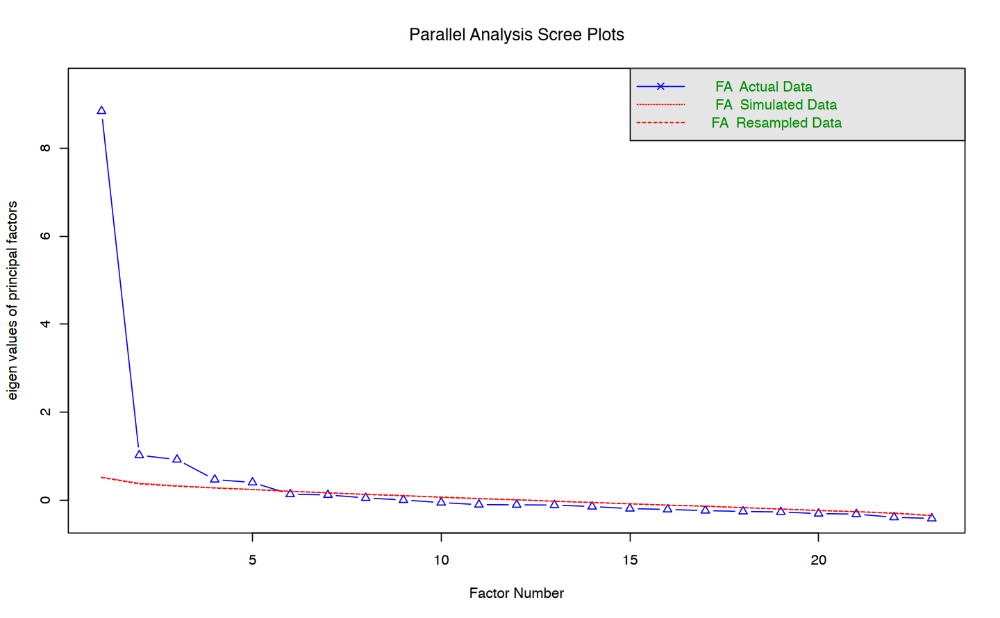

here::here("code", "_common.R") |> source()
# Load packages
if (!requireNamespace("pacman")) install.packages("pacman")
pacman::p_load(lavaan, psych, semPlot, semTools, effectsize, devtools)
# Source 'sleasy' functions
source(here::here("code", "sleasy.R"))42 Strategia Integrata per un’Analisi Fattoriale
Questo capitolo offre un tutorial, descritto da Saqr & López-Pernas (2024), su come eseguire un’analisi fattoriale.
Prerequisiti
Concetti e Competenze Chiave
Preparazione del Notebook
42.1 Introduzione
Secondo Saqr & López-Pernas (2024), non esiste una chiara distinzione tra quando usare l’Analisi Fattoriale Esplorativa (EFA) o l’Analisi Fattoriale Confermativa (CFA); spesso, entrambe le tecniche vengono utilizzate nello stesso studio. Questa sezione descrive una strategia metodica per integrare sia l’EFA che la CFA, articolata in tre passaggi che i ricercatori dovrebbero seguire quando i costrutti latenti sono parte del loro studio (sia perché sono il focus principale dello strumento, sia perché fungono da predittori o esiti nell’analisi): (1) esplorazione della struttura fattoriale, (2) costruzione del modello fattoriale e valutazione dell’adattamento, e (3) valutazione della generalizzabilità. Si presuppone che il ricercatore abbia già completato una fase preliminare di sviluppo dello strumento per un costrutto di interesse, come ad esempio la competenza interculturale, utilizzando variabili o comportamenti da ricerche precedenti, adattando uno strumento esistente, o sviluppandone uno nuovo basato sulla teoria. Inoltre, si suppone che siano stati raccolti dati da un campione rappresentativo della popolazione di interesse (ad esempio, studenti).
42.2 Passo 1: Esplorazione della Struttura Fattoriale
Una volta selezionate le variabili e raccolti i dati su di esse, il ricercatore dovrebbe iniziare con un’EFA. Se viene utilizzato uno strumento già validato o se si dispone di ipotesi forti sulla struttura fattoriale sottostante, si può verificare se il numero di fattori e le modalità di carico delle variabili sui fattori sono in linea con i risultati previsti. Le domande chiave da porsi sono: “Le variabili che si ritiene siano influenzate dallo stesso fattore sottostante caricano effettivamente su un unico fattore?” e, nel caso si supponga che le variabili siano causate da un unico fattore sottostante, “Queste variabili mostrano effettivamente forti carichi fattoriali su un solo fattore?”
Se lo strumento è nuovo, occorre verificare se i fattori e lo schema dei carichi sono interpretabili. Le domande chiave diventano: “Le variabili che caricano principalmente sullo stesso fattore condividono effettivamente un contenuto comune?” e “Le variabili che caricano su fattori diversi sono effettivamente qualitativamente differenti in qualche modo?”
Ritornando all’esempio di un test di matematica, si potrebbe osservare che compiti di addizione, sottrazione, divisione e moltiplicazione caricano su 4 fattori distinti, identificabili preliminarmente come abilità in addizione, sottrazione, divisione e moltiplicazione. In questa fase, può essere necessario fare aggiustamenti, come rimuovere variabili che non presentano carichi significativi (ad esempio, inferiori a 0.3) su alcuna dimensione, e rieseguire l’EFA. È importante riflettere sulle ragioni dei bassi carichi fattoriali (ad esempio, una formulazione ambigua di un item) e non rimuovere variabili senza una motivazione solida.
42.3 Passo 2: Costruzione del Modello Fattoriale e Valutazione dell’Adattamento
Dopo aver scelto un modello con l’EFA, è necessario raffinare il modello e utilizzare la CFA per valutare quanto bene il modello si adatta ai dati (ossia, quanto le covarianze tra variabili previste dalla struttura fattoriale corrispondono alle covarianze osservate nel dataset). Nell’EFA, tutte le variabili potevano caricare su tutti i fattori; tuttavia, spesso si dispone di informazioni teoriche o empiriche che suggeriscono di limitare il numero di carichi trasversali. In questa fase, si possono eliminare relazioni tra fattori e variabili che non sono coerenti con la teoria, ma attenzione al valore dei carichi fattoriali. I carichi prossimi allo zero possono essere rimossi senza rischio, ma i carichi maggiori richiedono maggiore cautela, poiché, anche se inizialmente non sembrano sensati, i dati suggeriscono la loro presenza. Quindi, esaminateli attentamente; se, dopo un’analisi approfondita, possono essere inclusi nella teoria o nelle ipotesi iniziali, si possono mantenere; in caso contrario, si possono rimuovere e verificare se il modello continua a essere adatto ai dati.
Dopo aver scelto le relazioni variabile-fattore da rimuovere, si costruisce il modello CFA corrispondente e lo si adatta ai dati per verificare se è sufficientemente adatto. Se il modello non si adatta bene, si può tornare ai risultati dell’EFA e valutare se bisogna consentire ulteriori carichi diversi da zero o applicare altre modifiche. È importante aggiungere al modello solo relazioni che abbiano senso dal punto di vista teorico.
42.4 Passo 3: Valutazione della Generalizzabilità
Dopo i passaggi precedenti, si dispone di un modello preliminare che si adatta bene sia alla teoria sia ai dati attuali. Tuttavia, l’obiettivo finale dovrebbe essere quello di creare strumenti che possano essere utilizzati per misurare costrutti in studi futuri, per cui è essenziale verificare che il modello preliminare si adatti anche a nuovi dati. Questo passaggio finale, chiamato validazione incrociata, consiste nell’adattare il modello a un nuovo dataset della stessa popolazione.
Per valutare la generalizzabilità, si potrebbe raccogliere un secondo dataset. Tuttavia, nella pratica, raccogliere dati più di una volta per lo sviluppo di uno strumento è spesso poco pratico. Un’alternativa valida è dividere casualmente il dataset in due parti: un campione su cui eseguire i Passi 1 (esplorazione della struttura fattoriale con EFA) e 2 (costruzione del modello fattoriale e valutazione con CFA) e un campione di riserva, che verrà utilizzato per il Passo 3 (valutazione della generalizzabilità). Se il modello CFA si adatta anche al campione di riserva, si può essere più sicuri che lo strumento sia utilizzabile in studi futuri. In caso contrario, occorre investigare le fonti di disadattamento tra il modello CFA e il campione di riserva e utilizzare i risultati di questa analisi per aggiornare teoria e modello.
Questi passaggi rappresentano una strategia adatta per l’analisi fattoriale in qualsiasi studio che utilizzi strumenti per misurare dimensioni latenti. L’unica situazione in cui sarebbe teoricamente possibile adattare direttamente un modello CFA è quando si usa uno strumento già validato su un campione della stessa popolazione, ma anche in questo caso è consigliabile seguire tutti i passaggi per evitare risultati distorti.
42.5 Analisi Fattoriale in R
Saqr & López-Pernas (2024) forniscono un tutorial in cui sono descritti i passaggi essenziali per esplorare la struttura fattoriale utilizzando sia l’Analisi Fattoriale Esplorativa (EFA) che l’Analisi Fattoriale Confermativa (CFA) con R. In particolare, vengono affrontati: la verifica delle caratteristiche dei dati per valutare l’adeguatezza per EFA/CFA, la scelta del numero di fattori, la valutazione dell’adattamento globale e locale del modello, e la verifica della generalizzabilità del modello fattoriale finale.
Il tutorial inizia con la preparazione necessaria: importare i dati, verificare l’idoneità dei dati per l’analisi fattoriale e predisporre un campione di riserva per la valutazione della generalizzabilità. Le sezioni successive illustrano come condurre un’EFA per definire una struttura fattoriale preliminare (Passo 1) e come affinare questo modello con la CFA (Passo 2). L’ultima sezione mostra come testare la generalizzabilità del modello fattoriale affinato tramite la validazione incrociata (Passo 3).
42.5.1 Preparazione
Saqr & López-Pernas (2024) utilizzano un dataset che raccoglie dati di un’indagine sul burnout degli insegnanti in Indonesia, con un totale di 876 rispondenti. Le domande coprono cinque ambiti: Concetto di Sé dell’Insegnante (TSC, 5 domande), Efficacia dell’Insegnante (TE, 5 domande), Esaurimento Emotivo (EE, 5 domande), Depersonalizzazione (DP, 3 domande) e Riduzione del Senso di Realizzazione Personale (RPA, 7 domande), per un totale di 25 variabili. Le risposte sono su una scala Likert a 5 punti (da 1 = “mai” a 5 = “sempre”).
dataset <- rio::import("https://github.com/lamethods/data/raw/main/4_teachersBurnout/2.%20Response.xlsx")
var_names <- colnames(dataset)42.5.2 I Dati Sono Adatti all’Analisi Fattoriale?
Per condurre un’Analisi Fattoriale Esplorativa (EFA) o Confermativa (CFA) è importante che i dati presentino alcune caratteristiche. Anzitutto, le variabili dovrebbero essere continue. Anche se le variabili raramente sono veramente continue, possono essere trattate come tali se sono state misurate su una scala con almeno cinque categorie di risposta e se le risposte sono distribuite in modo ragionevolmente simmetrico.
Se le variabili non sono continue, è comunque possibile eseguire un’analisi fattoriale, ma sarà necessario un metodo di stima specifico per dati categorici. Inoltre, è preferibile che tutte le variabili siano misurate sulla stessa scala; in alcuni casi, soprattutto nei dati educativi, questo potrebbe non essere garantito. Se le variabili sono su scale diverse o se, pur essendo sulla stessa scala, hanno intervalli di punteggio molto diversi (ad esempio, alcune variabili con punteggi da 1 a 5 e altre con punteggi solo da 2 a 4), è opportuno trasformare le variabili per rendere le scale più omogenee prima di procedere con l’analisi fattoriale.
Per ispezionare l’intervallo di ogni variabile, è possibile utilizzare il seguente comando:
describe(dataset)| vars | n | mean | sd | median | trimmed | mad | min | max | range | skew | kurtosis | se | |
|---|---|---|---|---|---|---|---|---|---|---|---|---|---|
| <int> | <dbl> | <dbl> | <dbl> | <dbl> | <dbl> | <dbl> | <dbl> | <dbl> | <dbl> | <dbl> | <dbl> | <dbl> | |
| TSC1 | 1 | 876 | 3.65 | 0.685 | 4 | 3.62 | 0.00 | 1 | 5 | 4 | -0.0924 | 0.0630 | 0.0231 |
| TSC2 | 2 | 876 | 3.81 | 0.639 | 4 | 3.78 | 0.00 | 2 | 5 | 3 | -0.0729 | -0.1412 | 0.0216 |
| TSC3 | 3 | 876 | 3.73 | 0.640 | 4 | 3.71 | 0.00 | 2 | 5 | 3 | -0.1658 | -0.0184 | 0.0216 |
| TSC4 | 4 | 876 | 3.71 | 0.673 | 4 | 3.67 | 0.00 | 2 | 5 | 3 | -0.0258 | -0.2521 | 0.0228 |
| TSC5 | 5 | 876 | 3.82 | 0.652 | 4 | 3.79 | 0.00 | 2 | 5 | 3 | -0.0996 | -0.1293 | 0.0220 |
| TE1 | 6 | 876 | 4.06 | 0.712 | 4 | 4.10 | 0.00 | 1 | 5 | 4 | -0.4669 | 0.3770 | 0.0241 |
| TE2 | 7 | 876 | 4.04 | 0.698 | 4 | 4.07 | 0.00 | 2 | 5 | 3 | -0.2200 | -0.4490 | 0.0236 |
| TE3 | 8 | 876 | 4.12 | 0.705 | 4 | 4.17 | 0.00 | 1 | 5 | 4 | -0.7210 | 1.6004 | 0.0238 |
| TE4 | 9 | 876 | 4.11 | 0.690 | 4 | 4.15 | 0.00 | 1 | 5 | 4 | -0.4737 | 0.5071 | 0.0233 |
| TE5 | 10 | 876 | 3.90 | 0.754 | 4 | 3.92 | 0.00 | 1 | 5 | 4 | -0.4117 | 0.1647 | 0.0255 |
| EE1 | 11 | 876 | 3.81 | 0.759 | 4 | 3.81 | 0.00 | 1 | 5 | 4 | -0.3458 | 0.2314 | 0.0256 |
| EE2 | 12 | 876 | 3.73 | 0.848 | 4 | 3.75 | 1.48 | 1 | 5 | 4 | -0.3696 | 0.1226 | 0.0287 |
| EE3 | 13 | 876 | 3.88 | 0.828 | 4 | 3.91 | 1.48 | 1 | 5 | 4 | -0.3128 | -0.3990 | 0.0280 |
| EE4 | 14 | 876 | 3.69 | 0.796 | 4 | 3.67 | 1.48 | 1 | 5 | 4 | -0.0341 | -0.4074 | 0.0269 |
| EE5 | 15 | 876 | 3.99 | 0.811 | 4 | 4.03 | 1.48 | 1 | 5 | 4 | -0.4273 | -0.2694 | 0.0274 |
| DE1 | 16 | 876 | 3.92 | 0.677 | 4 | 3.93 | 0.00 | 1 | 5 | 4 | -0.5261 | 1.2456 | 0.0229 |
| DE2 | 17 | 876 | 3.60 | 0.682 | 4 | 3.58 | 1.48 | 1 | 5 | 4 | -0.2190 | 0.6393 | 0.0230 |
| DE3 | 18 | 876 | 3.82 | 0.698 | 4 | 3.79 | 0.00 | 1 | 5 | 4 | -0.1368 | 0.0125 | 0.0236 |
| RPA1 | 19 | 876 | 3.93 | 0.834 | 4 | 3.97 | 1.48 | 1 | 5 | 4 | -0.5931 | 0.5042 | 0.0282 |
| RPA2 | 20 | 876 | 3.94 | 0.805 | 4 | 3.99 | 0.00 | 1 | 5 | 4 | -0.7855 | 1.2227 | 0.0272 |
| RPA3 | 21 | 876 | 3.88 | 0.789 | 4 | 3.91 | 0.00 | 1 | 5 | 4 | -0.5879 | 0.7489 | 0.0266 |
| RPA4 | 22 | 876 | 3.87 | 0.765 | 4 | 3.89 | 0.00 | 1 | 5 | 4 | -0.4781 | 0.3333 | 0.0258 |
| RPA5 | 23 | 876 | 3.84 | 0.786 | 4 | 3.86 | 0.00 | 1 | 5 | 4 | -0.5347 | 0.6706 | 0.0265 |
Tutte le variabili sono state valutate su scale Likert a 5 punti, e dall’output si nota che hanno intervalli di punteggio molto simili. Pertanto, è possibile trattarle come variabili continue, senza necessità di trasformazione.
In secondo luogo, la dimensione del campione deve essere sufficientemente ampia. Esistono alcune regole empiriche a riguardo. Una regola di base suggerisce un campione di circa 200 osservazioni, anche se campioni più piccoli possono essere adeguati per modelli semplici (con pochi fattori e/o relazioni forti tra fattori e variabili osservate), mentre modelli più complessi (con più fattori e/o relazioni più deboli) richiedono campioni più ampi. Altre regole si basano sul rapporto tra la dimensione del campione e il numero di parametri da stimare (cioè carichi fattoriali, intercetti e varianze degli errori). Bentler e Chou raccomandano 5 osservazioni per ogni parametro da stimare, mentre Jackson suggerisce di avere almeno 10, preferibilmente 20 osservazioni per ogni parametro (ad esempio, per un modello con un fattore e 10 variabili, bisognerebbe mirare a 300 casi, calcolando i 30 parametri da stimare: 10 carichi fattoriali, 10 intercetti e 10 varianze degli errori).
nrow(dataset)
876
Per il dataset di esempio con 25 variabili, che si presume misurino 5 costrutti latenti, è necessario stimare 25 intercetti, 25 varianze residue e 125 carichi fattoriali (5 × 25 = 125). In totale, questo comporta la stima di 175 parametri. Guardando l’output, si può concludere che la dimensione del campione è sufficientemente grande per l’EFA e la CFA, seguendo le linee guida di Bentler e Chou (5 × 175 = 875), ma non per quelle di Johnson. Poiché il campione non raggiunge il doppio delle dimensioni raccomandate, non si dovrebbe creare un campione di riserva; la validazione del modello potrebbe quindi essere riservata a uno studio futuro. Tuttavia, a scopo illustrativo, sarà comunque mostrato come creare un sottoinsieme di riserva per valutare la generalizzabilità del modello fattoriale finale.
Inoltre, è necessario che ci siano correlazioni sufficientemente alte tra le variabili. Altrimenti, non avrebbe senso esaminare la struttura fattoriale. Per verificare che le variabili nel dataset siano correlate, è possibile utilizzare il test di Bartlett [28], che verifica se la matrice di correlazione è una matrice identità (ovvero una matrice in cui tutti gli elementi fuori diagonale sono zero), indicando quindi che le variabili non sono correlate. L’ipotesi nulla di questo test afferma che la matrice di correlazione è una matrice identità. Se l’ipotesi nulla viene rifiutata, si può concludere che le variabili sono correlate e, quindi, procedere con l’analisi fattoriale. Con il comando seguente, si verifica se il p-value del test di Bartlett è inferiore al livello di significatività di 0,05 e, quindi, se l’ipotesi nulla di “assenza di correlazione tra variabili” può essere rifiutata:
(cortest.bartlett(
R = cor(dataset[, var_names]), n =
nrow(dataset)
)$p.value) < 0.05
TRUE
Il p-value è effettivamente inferiore a 0,05, quindi le variabili sono correlate.
Oltre a verificare le correlazioni tra variabili, è utile determinare se esiste una quantità sufficiente di varianza comune tra di esse. Questo può essere valutato con il test di Kaiser-Meyer-Olkin (KMO) [29]. La statistica KMO misura la proporzione di varianza totale tra variabili che potrebbe essere varianza comune. Più alta è questa proporzione, più alto è il valore KMO, e quindi i dati saranno più adatti all’analisi fattoriale. Kaiser suggerisce che il valore KMO dovrebbe essere almeno 0,8 per avere dati adeguati (e almeno 0,9 per dati eccellenti). Con il seguente comando è possibile ottenere i risultati:
KMO(dataset)Kaiser-Meyer-Olkin factor adequacy
Call: KMO(r = dataset)
Overall MSA = 0.94
MSA for each item =
TSC1 TSC2 TSC3 TSC4 TSC5 TE1 TE2 TE3 TE4 TE5 EE1 EE2 EE3 EE4 EE5
0.96 0.96 0.95 0.94 0.96 0.93 0.96 0.94 0.94 0.96 0.95 0.94 0.95 0.94 0.97
DE1 DE2 DE3 RPA1 RPA2 RPA3 RPA4 RPA5
0.87 0.86 0.92 0.91 0.91 0.95 0.94 0.96 Il valore complessivo di KMO è pari a 0,94, indicando che i dati sono eccellenti per l’analisi fattoriale.
Oltre alle caratteristiche essenziali dei dati, è importante considerare la non-normalità delle variabili e i dati mancanti. Se le variabili non sono distribuite normalmente, è necessario utilizzare un metodo di stima robusto. Inoltre, se ci sono valori mancanti per una o più variabili, questo deve essere gestito nella stima. Di seguito sarà descritto come procedere. La normalità può essere valutata osservando gli istogrammi delle variabili: come mostrato nella figura successiva, le distribuzioni delle variabili presentano una leggera asimmetria a sinistra. Perciò, è consigliabile utilizzare un metodo di stima robusto rispetto alla non-normalità.
dataset |>
pivot_longer(2:ncol(dataset),
names_to = "Variable", values_to = "Score"
) |>
ggplot(aes(x = Score)) +
geom_histogram(bins = 6) +
scale_x_continuous(
limits = c(0, 6), breaks =
c(1, 2, 3, 4, 5)
) +
facet_wrap("Variable",
ncol = 6, scales =
"free"
)Warning message:
"Removed 44 rows containing missing values or values outside the scale range
(`geom_bar()`)."
Successivamente, possiamo verificare la presenza di dati mancanti con il seguente comando:
colSums(is.na(dataset)) |> print()TSC1 TSC2 TSC3 TSC4 TSC5 TE1 TE2 TE3 TE4 TE5 EE1 EE2 EE3 EE4 EE5
0 0 0 0 0 0 0 0 0 0 0 0 0 0 0
DE1 DE2 DE3 RPA1 RPA2 RPA3 RPA4 RPA5
0 0 0 0 0 0 0 0 42.6 Separare un Campione di Riserva
Una volta verificato che i dati siano adatti all’analisi fattoriale, puoi considerare di separare un campione di riserva per valutare la generalizzabilità dei risultati. Tuttavia, è importante tenere conto della dimensione del campione. Come indicato sopra, la dimensione minima richiesta del campione dovrebbe essere almeno 5 (preferibilmente 10 o 20) volte il numero di parametri che stai stimando. Non separare un campione di riserva a meno che il campione non sia circa il doppio della dimensione minima richiesta, altrimenti potresti non avere dati sufficienti per costruire un modello appropriato. In questo caso, la validazione del modello finale dovrà essere effettuata in studi futuri. Tuttavia, il numero di parametri per un modello CFA è generalmente inferiore rispetto a un modello EFA, quindi è accettabile se il campione di riserva è leggermente più piccolo rispetto al campione di costruzione del modello.
Come determinato in precedenza, il campione non è due volte la dimensione minima richiesta per un modello con 25 variabili e 5 fattori latenti, ma, a scopo illustrativo, separeremo comunque un campione di riserva. Per fare ciò, si possono assegnare casualmente 438 righe a un dataset di costruzione del modello e a un dataset di riserva. Ecco i comandi per farlo:
Impostare il seed: Con la prima riga di codice, imposti un seed per ottenere la stessa sequenza casuale ogni volta che esegui il codice, garantendo così la replicabilità dei risultati.
Creare il vettore di classificazione: Crei un vettore chiamato
indche contiene 438 volte i termini “model.building” e “holdout” rispettivamente, in ordine casuale. Ottieni così un totale di 876 classificazioni, una per ciascun partecipante (cioè, una per riga) nei tuoi dati.Dividere il dataset: Crei una lista temporanea chiamata
tmpche contiene due dataset: per ciascun numero di riga, la funzionesplit()verifica se è assegnata l’etichetta “model.building” o “holdout” e assegna la riga al rispettivo dataset. Ad esempio, se i primi tre elementi del vettoreindsono “model.building”, “model.building” e “holdout”, le prime due righe del dataset vengono assegnate al dataset di costruzione del modello, mentre la terza riga va al dataset di riserva.Estrarre i dataset finali: Nell’ultimo passaggio, estrai i due nuovi dataset dalla lista e li memorizzi negli oggetti chiamati “model.building” e “holdout”.
set.seed(19)
ind <- sample(
c(rep("model.building", 438), rep("holdout", 438))
)
tmp <- split(dataset, ind)
model.building <- tmp$model.building
holdout <- tmp$holdout42.7 Passo 1: Esplorare la Struttura Fattoriale
Il primo passo nell’esplorare la struttura fattoriale consiste nel determinare quante dimensioni potrebbero sottostare al costrutto di interesse. In questo tutorial, vedremo come farlo utilizzando due metodi comuni: l’analisi parallela e il criterio di informazione bayesiano (BIC). Questi metodi si completano a vicenda: l’analisi parallela fornisce un intervallo per il numero di dimensioni, mentre il BIC ci aiuta a scegliere il numero specifico che meglio si adatta ai dati.
42.7.1 Analisi Parallela
L’analisi parallela è un metodo basato su simulazioni che individua il numero di fattori confrontando la varianza spiegata da un certo numero di fattori nei dati con la varianza spiegata dallo stesso numero di fattori in dataset simulati (creati con lo stesso numero di variabili e osservazioni ma senza correlazioni). Se la varianza spiegata nei dati è maggiore rispetto a quella nei dati simulati, significa che il fattore è significativo e non dovuto al caso. Il numero di fattori selezionato è quello per cui la varianza spiegata nei dati reali è maggiore di quella nei dati simulati. Dettagli tecnici su questo metodo si trovano nel file di aiuto della funzione fa.parallel().
42.7.2 Uso dell’Analisi Parallela
Per applicare l’analisi parallela, si specificano i dati di costruzione del modello e tutte le colonne delle variabili d’interesse. Con l’argomento fa = "fa", si specifica di cercare il miglior numero di fattori per l’analisi fattoriale (e non per l’analisi dei componenti principali, un metodo diverso). Il risultato include un messaggio e un grafico: il messaggio indica che probabilmente ci sono cinque fattori sottostanti ai dati. Nel grafico, si nota che, oltre cinque fattori, la varianza spiegata nei dati è inferiore rispetto a quella nei dati simulati.
L’analisi parallela è puramente basata sui dati e dipende dal campione specifico, quindi i cinque fattori sono un punto di partenza e dovrebbero essere considerati come un intervallo plausibile di fattori (più o meno uno o più fattori, se necessario).
42.7.3 Criterio di Informazione Bayesiano (BIC)
Per decidere il numero finale di fattori, si eseguono più modelli fattoriali con diversi numeri di fattori (quelli plausibili indicati dall’analisi parallela) e li si confronta per interpretabilità (cioè, il senso teorico delle relazioni tra variabili e fattori) e adattamento, utilizzando il BIC. Il BIC permette di selezionare il modello equilibrando la qualità dell’adattamento ai dati con la semplicità del modello, penalizzando ogni parametro aggiuntivo. Più basso è il valore BIC, meglio il modello si adatta ai dati. Se il BIC più basso corrisponde al modello con cinque fattori, si ha un supporto per la soluzione a cinque fattori, ma la decisione finale dovrebbe sempre tener conto anche dell’interpretabilità.
fa.parallel(x = model.building[, var_names], fa = "fa")Parallel analysis suggests that the number of factors = 5 and the number of components = NA 
42.7.4 Analisi Fattoriale Esplorativa
L’analisi fattoriale esplorativa può essere eseguita con il seguente comando:
EFA <- efa(
data = model.building[, var_names],
nfactors = 4:6,
rotation = "geomin",
estimator = "MLR",
meanstructure = TRUE
)Warning message:
"lavaan->lav_model_vcov():
The variance-covariance matrix of the estimated parameters (vcov) does
not appear to be positive definite! The smallest eigenvalue (=
-5.004016e-20) is smaller than zero. This may be a symptom that the
model is not identified."
Warning message:
"lavaan->lav_model_vcov():
The variance-covariance matrix of the estimated parameters (vcov) does
not appear to be positive definite! The smallest eigenvalue (=
-4.736901e-32) is smaller than zero. This may be a symptom that the
model is not identified."
Warning message:
"lavaan->lav_model_vcov():
The variance-covariance matrix of the estimated parameters (vcov) does
not appear to be positive definite! The smallest eigenvalue (=
-6.220714e-32) is smaller than zero. This may be a symptom that the
model is not identified."La funzione efa() è inclusa nel pacchetto lavaan.
- Primo argomento: Con
data, si specifica il dataset su cui eseguire l’analisi fattoriale. - Argomento
nfactors: Qui si indica l’intervallo di fattori per cui si vogliono ottenere i risultati. - Argomento
rotation: Questo serve a “identificare” il modello, un passaggio necessario solo per l’EFA (Analisi Fattoriale Esplorativa) e non per la CFA (Analisi Fattoriale Confermativa). In CFA, infatti, si impongono restrizioni che fissano la struttura del modello, ma in EFA, senza queste restrizioni, si ottengono infinite soluzioni con lo stesso livello di adattamento. Di conseguenza, è possibile “ruotare” la matrice dei carichi fattoriali in molti modi senza cambiare la posizione relativa dei dati osservati, ma solo orientando diversamente gli assi dei fattori latenti.
Impostazione dei parametri
Nell’argomento rotation, è possibile usare geomin, una rotazione che consente ai fattori di essere correlati, il che è realistico in contesti educativi. Per altre opzioni di rotazione, consultare [23].
- Argomento
estimator: permette di scegliere il metodo di stima. Il valore predefinito è la stima di massima verosimiglianza (“ML”), ma qui si usa “MLR” (massima verosimiglianza robusta) per gestire lievi violazioni della normalità. - Dati mancanti: Se i dati contengono valori mancanti, si può aggiungere l’argomento
missing = "fiml", che applica un metodo di stima che usa tutte le informazioni disponibili (Full Information Maximum Likelihood, FIML), ideale se i dati mancanti sono almeno MAR (Missing At Random). meanstructure = TRUE: Se impostato suTRUE, stima anche gli intercetti delle variabili osservate oltre a varianze e covarianze. Se si utilizza l’argomentomissing,meanstructuresarà automaticamente impostato suTRUE.
Infine, per estrarre e ordinare i valori BIC in ordine crescente, è possibile utilizzare il seguente comando:
sort(fitMeasures(EFA)["bic", ]) |> print()nfactors = 5 nfactors = 4 nfactors = 6
18142 18167 18189 L’output indica che il modello con cinque fattori è quello migliore secondo il BIC. Di conseguenza, le due tecniche per determinare il numero di fattori sono concordi. Inoltre, dall’articolo originale da cui sono stati ottenuti i dati per questo tutorial, sappiamo che il numero atteso di fattori era anch’esso cinque. Pertanto, ha senso continuare la costruzione del modello utilizzando la soluzione a cinque fattori in questo tutorial.
Con il seguente comando, è possibile ottenere i carichi fattoriali per i cinque fattori. Lavaan, di default, fornisce i carichi standardizzati, che possono essere interpretati come correlazioni tra variabili e fattori. Nell’output, vengono mostrati tutti i carichi superiori (in valore assoluto) a 0.3. Osservando i risultati, si nota una struttura semplice, con ogni variabile che carica su un solo fattore.
Un’eccezione è rappresentata dalla variabile DE1, che ha un carico positivo sul fattore 4 (insieme alle altre variabili DE) e un carico negativo sul fattore 3 (insieme alle variabili EE). A parte questo cross-loading, i risultati sono in linea con il modello teorico: tutte le variabili TSC, TE, EE, DE e RPA caricano rispettivamente su un singolo fattore.
Nel prossimo passaggio, il modello può essere ulteriormente affinato in base all’adattamento. Poiché il modello senza cross-loading è completamente coerente con la teoria, nel CFA della sezione successiva si fisserà il carico della variabile DE1 sul fattore 3 a zero. Tuttavia, se il modello CFA non dovesse adattarsi bene, reintrodurre questo cross-loading sarebbe la prima modifica logica da considerare.
EFA$nf5
f1 f2 f3 f4 f5
TSC1 0.584* * .*
TSC2 0.487* * .*
TSC3 0.637* .* *
TSC4 0.578* .* .* *
TSC5 0.547* .
TE1 0.728* .
TE2 . 0.672*
TE3 0.708* .
TE4 0.651* .*
TE5 0.337* .* .*
EE1 . 0.469* .
EE2 .* 0.689*
EE3 0.768*
EE4 .* 0.732* .
EE5 . 0.479* .*
DE1 -0.353* 0.744* .
DE2 .* 0.821*
DE3 .* 0.755*
RPA1 0.851*
RPA2 0.906*
RPA3 0.624*
RPA4 . . 0.350*
RPA5 . . 0.338*42.8 Passo 2: Costruire il Modello Fattoriale e Valutare l’Adattamento
Il primo passo per costruire il modello è descriverlo usando la sintassi specifica di lavaan.
Nel modello seguente, vengono definiti i 5 fattori (TSC, TE, EE, DE e RPA), misurati da gruppi di variabili diversi (in linea con la teoria e i risultati dell’EFA del passaggio precedente), separati con “+”. Inoltre, si specifica che le correlazioni tra fattori devono essere stimate. Gli intercetti non sono inclusi esplicitamente, ma si possono aggiungere usando l’argomento meanstructure = TRUE al comando di stima del modello CFA.
CFA_model <- "
# Regressing items on factors
TSC =~ TSC1 + TSC2 + TSC3 + TSC5
TE =~ TE1 + TE2 + TE3 + TE5
EE =~ EE1 + EE2 + EE3 + EE4
DE =~ DE1 + DE2 + DE3
RPA =~ RPA1 + RPA2 + RPA3 + RPA4
# Correlations between factors
TSC ~~ TE
TSC ~~ EE
TSC ~~ DE
TSC ~~ RPA
TE ~~ EE
TE ~~ DE
TE ~~ RPA
EE ~~ DE
EE ~~ RPA
DE ~~ RPA
"CFA <- cfa(
model = CFA_model,
data = model.building[, var_names],
estimator = "MLR",
std.lv = TRUE,
meanstructure = TRUE
)Dopo aver eseguito la CFA, è possibile valutare quanto bene il modello si adatta ai dati.
Esistono due tipi di misure di adattamento: globale e locale. Inizia con le misure di adattamento globale, che indicano quanto bene l’intero modello si adatta ai dati. Le principali misure globali di adattamento sono:
- Test di significatività Chi-quadro: verifica se il modello si adatta perfettamente ai dati, cioè se è in grado di riprodurre esattamente le relazioni osservate tra le variabili.
- Indice di adattamento comparativo (CFI): confronta l’adattamento del modello con quello di un modello che assume zero correlazioni tra le variabili.
- Errore quadratico medio di approssimazione (RMSEA): quantifica l’adattamento approssimativo tra modello e dati, senza richiedere un adattamento perfetto.
- Residuo quadratico medio standardizzato (SRMR): riassume la differenza tra la matrice di covarianza campionaria e quella del modello, in un solo valore.
A differenza del test Chi-quadro, il CFI, RMSEA e SRMR non sono veri test di ipotesi e valutano l’adattamento approssimato.
Regole pratiche per interpretare le misure di adattamento: - Il test Chi-quadro dovrebbe essere non significativo (non è sempre affidabile con campioni ampi, in cui il test tende a rifiutare l’adattamento perfetto). - CFI: dovrebbe essere maggiore di 0,9. - RMSEA: la stima puntuale e il limite superiore dell’intervallo di confidenza al 95% dovrebbero essere inferiori a 0,05. - SRMR: dovrebbe essere inferiore a 0,08.
È possibile ottenere queste misure di adattamento e la loro interpretazione con il seguente comando:
globalFit(CFA)Results------------------------------------------------------------------------
Chi-Square (142) = 319 with p-value
= 1.33e-15
CFI = 0.948
RMSEA = 0.0533; lower bound = 0.0459;
upper bound = 0.0608
SRMR = 0.0435
Interpretations---------------------------------------------------------------
The hypothesis of perfect fit *is* rejected according to the Chi-
Square test statistics because the p-value is smaller than 0.05
The hypothesis of approximate model fit *is not* rejected according
to the CFI because the value is larger than 0.9.
The hypothesis of approximate model fit *is* rejected according
to the RMSEA because the point estimate is larger or equal to
0.05.
The hypothesis of approximate model fit *is not* rejected according
to the SRMR because the value is smaller than 0.08.
Analizzando l’output, si vede che il test di significatività Chi-quadro ha rifiutato l’adattamento perfetto, ma l’adattamento approssimato è confermato dal CFI e dallo SRMR.
Idealmente, almeno tre delle misure di adattamento dovrebbero indicare un buon adattamento; tuttavia, per semplicità, in questo tutorial si procede con il modello senza ulteriori modifiche. In pratica, potresti affinare ulteriormente il modello, ad esempio reintroducendo il cross-loading tra DE1 e il fattore 3, e valutare nuovamente l’adattamento con il comando globalFit().
Le misure sopra considerate valutano l’adattamento globale del modello, ossia quanto bene il modello nel suo complesso rappresenta i dati. Tuttavia, queste misure possono non rilevare problemi locali di adattamento tra modello e dati. Ad esempio, se il modello a 5 fattori descrive bene tutte le variabili tranne una, l’adattamento globale potrebbe comunque risultare buono, ma le stime per quella variabile saranno errate.
Per questo motivo, è importante controllare anche l’adattamento locale, ovvero se ogni parte del modello si adatta bene ai dati. Esistono diverse misure per valutare l’adattamento locale [38], ma il metodo più semplice consiste nel confrontare le differenze assolute tra la matrice di covarianza del campione e quella implicata dal modello. Queste due matrici sono le stesse usate per calcolare l’SRMR, ma anziché ottenere un singolo valore complessivo, puoi osservare la differenza per ogni varianza e covarianza separatamente. Con il seguente comando, puoi vedere le deviazioni tra le due matrici per ogni coppia di variabili e identificare la differenza massima:
localFit(CFA) |> print()$local_misfit
TSC1 TSC2 TSC3 TSC5 TE1 TE2 TE3 TE5 EE1 EE2 EE3
TSC1 0.000
TSC2 0.012 0.000
TSC3 0.007 0.012 0.000
TSC5 0.007 0.002 0.010 0.000
TE1 0.019 0.000 0.009 0.010 0.000
TE2 0.025 0.014 0.031 0.021 0.011 0.000
TE3 0.013 0.010 0.048 0.005 0.003 0.008 0.000
TE5 0.025 0.028 0.032 0.022 0.012 0.026 0.005 0.000
EE1 0.013 0.010 0.004 0.016 0.042 0.044 0.001 0.072 0.000
EE2 0.004 0.009 0.025 0.003 0.029 0.050 0.027 0.043 0.002 0.000
EE3 0.013 0.015 0.039 0.013 0.021 0.042 0.006 0.081 0.012 0.001 0.000
EE4 0.002 0.002 0.000 0.013 0.042 0.021 0.006 0.039 0.017 0.017 0.010
DE1 0.011 0.019 0.015 0.002 0.010 0.026 0.011 0.036 0.010 0.048 0.042
DE2 0.014 0.018 0.030 0.011 0.008 0.025 0.032 0.059 0.058 0.031 0.012
DE3 0.000 0.008 0.041 0.021 0.023 0.006 0.012 0.019 0.048 0.015 0.022
RPA1 0.008 0.015 0.034 0.011 0.013 0.022 0.001 0.012 0.011 0.018 0.019
RPA2 0.006 0.008 0.044 0.007 0.021 0.004 0.009 0.008 0.015 0.016 0.002
RPA3 0.041 0.016 0.012 0.003 0.006 0.010 0.017 0.034 0.035 0.008 0.022
RPA4 0.020 0.000 0.003 0.031 0.001 0.027 0.031 0.039 0.042 0.035 0.031
EE4 DE1 DE2 DE3 RPA1 RPA2 RPA3 RPA4
TSC1
TSC2
TSC3
TSC5
TE1
TE2
TE3
TE5
EE1
EE2
EE3
EE4 0.000
DE1 0.040 0.000
DE2 0.052 0.004 0.000
DE3 0.012 0.002 0.006 0.000
RPA1 0.041 0.008 0.006 0.002 0.000
RPA2 0.053 0.010 0.025 0.024 0.024 0.000
RPA3 0.009 0.002 0.016 0.021 0.009 0.017 0.000
RPA4 0.053 0.006 0.056 0.074 0.046 0.011 0.052 0.000
$max_misfit
[1] 0.0805
Dall’analisi dell’adattamento locale, si può concludere che non ci sono problemi di adattamento locale, dato che la differenza massima tra le due matrici è solo 0,08, un valore piccolo rispetto alla scala delle variabili osservate.
Se ci fossero problemi di adattamento locale, ad esempio se la correlazione tra due variabili osservate fosse significativamente maggiore di quanto previsto dal modello, si potrebbero apportare modifiche mirate al modello, come aggiungere una covarianza aggiuntiva tra queste variabili. Tuttavia, tali aggiustamenti dovrebbero sempre avere una base teorica solida! Non aggiungere mai parametri al modello solo per migliorare l’adattamento.
Con questa valutazione dell’adattamento si conclude il passaggio. Ora è possibile esaminare i carichi del modello finale con il seguente comando:
inspect(object = CFA, what = "std")$lambda| TSC | TE | EE | DE | RPA | |
|---|---|---|---|---|---|
| TSC1 | 0.657 | 0.000 | 0.000 | 0.000 | 0.000 |
| TSC2 | 0.692 | 0.000 | 0.000 | 0.000 | 0.000 |
| TSC3 | 0.628 | 0.000 | 0.000 | 0.000 | 0.000 |
| TSC5 | 0.726 | 0.000 | 0.000 | 0.000 | 0.000 |
| TE1 | 0.000 | 0.789 | 0.000 | 0.000 | 0.000 |
| TE2 | 0.000 | 0.745 | 0.000 | 0.000 | 0.000 |
| TE3 | 0.000 | 0.788 | 0.000 | 0.000 | 0.000 |
| TE5 | 0.000 | 0.649 | 0.000 | 0.000 | 0.000 |
| EE1 | 0.000 | 0.000 | 0.739 | 0.000 | 0.000 |
| EE2 | 0.000 | 0.000 | 0.802 | 0.000 | 0.000 |
| EE3 | 0.000 | 0.000 | 0.786 | 0.000 | 0.000 |
| EE4 | 0.000 | 0.000 | 0.760 | 0.000 | 0.000 |
| DE1 | 0.000 | 0.000 | 0.000 | 0.665 | 0.000 |
| DE2 | 0.000 | 0.000 | 0.000 | 0.640 | 0.000 |
| DE3 | 0.000 | 0.000 | 0.000 | 0.738 | 0.000 |
| RPA1 | 0.000 | 0.000 | 0.000 | 0.000 | 0.849 |
| RPA2 | 0.000 | 0.000 | 0.000 | 0.000 | 0.854 |
| RPA3 | 0.000 | 0.000 | 0.000 | 0.000 | 0.788 |
| RPA4 | 0.000 | 0.000 | 0.000 | 0.000 | 0.587 |
42.9 Passo 3: Valutare la Generalizzabilità
L’ultimo passo consiste nel valutare la generalizzabilità del modello CFA ottenuto nel Passo 2, adattando lo stesso modello al campione di riserva. Se il modello si adatta bene anche a questo campione alternativo, puoi essere più sicuro che il tuo modello fattoriale sia applicabile in modo più ampio e sia in grado di rappresentare la struttura sottostante del tuo strumento di misura anche in studi e campioni futuri.
Per valutare la generalizzabilità, è possibile usare lo stesso codice del Passo 2, ma specificando il campione di riserva nell’argomento data.
CFA_holdout <- cfa(
model = CFA_model,
data = holdout[, var_names],
estimator = "MLR",
std.lv = TRUE,
meanstructure = TRUE
)Dopo aver adattato il modello CFA al campione di riserva, puoi ottenere nuovamente le misure di adattamento e la loro interpretazione usando il comando globalFit().
globalFit(CFA_holdout)Results------------------------------------------------------------------------
Chi-Square (142) = 340 with p-value
= 0
CFI = 0.943
RMSEA = 0.0564; lower bound = 0.049;
upper bound = 0.0638
SRMR = 0.0416
Interpretations---------------------------------------------------------------
The hypothesis of perfect fit *is* rejected according to the Chi-
Square test statistics because the p-value is smaller than 0.05
The hypothesis of approximate model fit *is not* rejected according
to the CFI because the value is larger than 0.9.
The hypothesis of approximate model fit *is* rejected according
to the RMSEA because the point estimate is larger or equal to
0.05.
The hypothesis of approximate model fit *is not* rejected according
to the SRMR because the value is smaller than 0.08.
Dall’analisi dell’output, si nota che l’adattamento del modello al campione di riserva è molto simile a quello ottenuto con i dati di costruzione del modello. Anche in questo caso, il test Chi-quadro rifiuta l’adattamento perfetto, ma le misure CFI e SRMR confermano un buon adattamento approssimativo.
L’adattamento locale può essere verificato utilizzando lo stesso comando del Passo 2, questa volta applicato ai risultati del campione di riserva.
localFit(CFA_holdout) |> print()$local_misfit
TSC1 TSC2 TSC3 TSC5 TE1 TE2 TE3 TE5 EE1 EE2 EE3
TSC1 0.000
TSC2 0.010 0.000
TSC3 0.012 0.015 0.000
TSC5 0.007 0.007 0.005 0.000
TE1 0.023 0.023 0.003 0.014 0.000
TE2 0.027 0.012 0.019 0.008 0.008 0.000
TE3 0.012 0.010 0.024 0.008 0.012 0.002 0.000
TE5 0.019 0.014 0.008 0.002 0.046 0.006 0.013 0.000
EE1 0.037 0.023 0.009 0.005 0.035 0.009 0.002 0.011 0.000
EE2 0.028 0.003 0.003 0.019 0.038 0.016 0.069 0.008 0.033 0.000
EE3 0.032 0.047 0.012 0.017 0.024 0.017 0.004 0.071 0.026 0.019 0.000
EE4 0.006 0.033 0.003 0.002 0.027 0.002 0.002 0.048 0.015 0.020 0.004
DE1 0.056 0.005 0.007 0.007 0.005 0.020 0.003 0.032 0.037 0.072 0.020
DE2 0.005 0.029 0.032 0.061 0.012 0.014 0.046 0.006 0.024 0.038 0.034
DE3 0.012 0.019 0.022 0.002 0.034 0.016 0.014 0.005 0.057 0.032 0.050
RPA1 0.019 0.009 0.012 0.028 0.018 0.001 0.003 0.004 0.030 0.031 0.037
RPA2 0.009 0.020 0.023 0.001 0.017 0.016 0.018 0.004 0.003 0.045 0.008
RPA3 0.000 0.007 0.004 0.009 0.000 0.006 0.000 0.028 0.011 0.021 0.025
RPA4 0.018 0.015 0.006 0.014 0.021 0.019 0.040 0.036 0.049 0.023 0.046
EE4 DE1 DE2 DE3 RPA1 RPA2 RPA3 RPA4
TSC1
TSC2
TSC3
TSC5
TE1
TE2
TE3
TE5
EE1
EE2
EE3
EE4 0.000
DE1 0.036 0.000
DE2 0.018 0.020 0.000
DE3 0.020 0.019 0.006 0.000
RPA1 0.003 0.014 0.029 0.004 0.000
RPA2 0.051 0.006 0.010 0.005 0.020 0.000
RPA3 0.002 0.030 0.006 0.026 0.016 0.017 0.000
RPA4 0.023 0.008 0.028 0.046 0.057 0.005 0.093 0.000
$max_misfit
[1] 0.0931
I risultati mostrano che l’adattamento locale è sufficiente anche per il campione di riserva (la differenza massima assoluta tra le due matrici è solo 0,09) ed è nuovamente paragonabile a quello ottenuto con i dati di costruzione del modello.
Infine, è possibile esaminare i carichi del modello finale adattato al campione di riserva.
inspect(object = CFA_holdout, what = "std")$lambda |> print() TSC TE EE DE RPA
TSC1 0.679 0.000 0.000 0.000 0.000
TSC2 0.689 0.000 0.000 0.000 0.000
TSC3 0.691 0.000 0.000 0.000 0.000
TSC5 0.702 0.000 0.000 0.000 0.000
TE1 0.000 0.694 0.000 0.000 0.000
TE2 0.000 0.772 0.000 0.000 0.000
TE3 0.000 0.819 0.000 0.000 0.000
TE5 0.000 0.677 0.000 0.000 0.000
EE1 0.000 0.000 0.749 0.000 0.000
EE2 0.000 0.000 0.794 0.000 0.000
EE3 0.000 0.000 0.781 0.000 0.000
EE4 0.000 0.000 0.801 0.000 0.000
DE1 0.000 0.000 0.000 0.677 0.000
DE2 0.000 0.000 0.000 0.659 0.000
DE3 0.000 0.000 0.000 0.766 0.000
RPA1 0.000 0.000 0.000 0.000 0.851
RPA2 0.000 0.000 0.000 0.000 0.867
RPA3 0.000 0.000 0.000 0.000 0.700
RPA4 0.000 0.000 0.000 0.000 0.618Anche in questo caso, i risultati del campione di costruzione e del campione di riserva sono molto simili, con carichi fattoriali paragonabili a quelli precedenti.
Poiché il modello si adatta sufficientemente bene al campione di riserva (almeno per questa illustrazione; idealmente, almeno 3 su 4 misure di adattamento dovrebbero indicare un buon adattamento, cosa che qui non si è verificata del tutto) e i parametri stimati sono simili tra i due dataset, si può concludere che la generalizzabilità del modello è soddisfacente. Se il modello non si fosse adattato adeguatamente al campione di riserva, si dovrebbe concludere che, pur essendo adatto ai dati di costruzione, il modello CFA del Passo 2 potrebbe non rappresentare una struttura applicabile in modo generale. In quel caso, la struttura fattoriale richiederebbe ulteriori perfezionamenti. Dato che il campione di riserva è stato già usato, questa revisione richiederebbe una nuova raccolta di dati, da suddividere nuovamente in un campione di costruzione e uno di riserva, per ripetere i tre passaggi.
42.10 Riflessioni conclusive
L’analisi fattoriale è un ottimo metodo per studiare costrutti non direttamente osservabili. Ha una vasta gamma di applicazioni interdisciplinari e ha sviluppi estesi, come l’analisi fattoriale multigruppo, che sarà trattata nel capitolo successivo con una discussione sull’importanza dell’invarianza di misura. Questo capitolo serve principalmente come introduzione ai concetti di base e per stimolare l’interesse e la sicurezza nell’applicazione autonoma del metodo.
42.11 Session Info
sessionInfo()R version 4.4.2 (2024-10-31)
Platform: aarch64-apple-darwin20
Running under: macOS Sequoia 15.1
Matrix products: default
BLAS: /Library/Frameworks/R.framework/Versions/4.4-arm64/Resources/lib/libRblas.0.dylib
LAPACK: /Library/Frameworks/R.framework/Versions/4.4-arm64/Resources/lib/libRlapack.dylib; LAPACK version 3.12.0
locale:
[1] C
time zone: Europe/Rome
tzcode source: internal
attached base packages:
[1] stats graphics grDevices utils datasets methods base
other attached packages:
[1] devtools_2.4.5 usethis_3.0.0 effectsize_0.8.9 MASS_7.3-61
[5] viridis_0.6.5 viridisLite_0.4.2 ggpubr_0.6.0 ggExtra_0.10.1
[9] gridExtra_2.3 patchwork_1.3.0 bayesplot_1.11.1 semTools_0.5-6
[13] semPlot_1.1.6 lavaan_0.6-19 psych_2.4.6.26 scales_1.3.0
[17] markdown_1.13 knitr_1.49 lubridate_1.9.3 forcats_1.0.0
[21] stringr_1.5.1 dplyr_1.1.4 purrr_1.0.2 readr_2.1.5
[25] tidyr_1.3.1 tibble_3.2.1 ggplot2_3.5.1 tidyverse_2.0.0
[29] here_1.0.1
loaded via a namespace (and not attached):
[1] splines_4.4.2 later_1.3.2 pbdZMQ_0.3-13
[4] R.oo_1.27.0 cellranger_1.1.0 datawizard_0.13.0
[7] XML_3.99-0.17 rpart_4.1.23 lifecycle_1.0.4
[10] rstatix_0.7.2 rprojroot_2.0.4 lattice_0.22-6
[13] insight_0.20.5 rockchalk_1.8.157 backports_1.5.0
[16] magrittr_2.0.3 openxlsx_4.2.7.1 Hmisc_5.2-0
[19] rmarkdown_2.29 remotes_2.5.0 httpuv_1.6.15
[22] qgraph_1.9.8 zip_2.3.1 sessioninfo_1.2.2
[25] pkgbuild_1.4.5 pbapply_1.7-2 minqa_1.2.8
[28] pkgload_1.4.0 multcomp_1.4-26 abind_1.4-8
[31] quadprog_1.5-8 R.utils_2.12.3 nnet_7.3-19
[34] TH.data_1.1-2 sandwich_3.1-1 openintro_2.5.0
[37] arm_1.14-4 airports_0.1.0 codetools_0.2-20
[40] tidyselect_1.2.1 farver_2.1.2 lme4_1.1-35.5
[43] stats4_4.4.2 base64enc_0.1-3 jsonlite_1.8.9
[46] ellipsis_0.3.2 Formula_1.2-5 survival_3.7-0
[49] emmeans_1.10.5 tools_4.4.2 rio_1.2.3
[52] Rcpp_1.0.13-1 glue_1.8.0 mnormt_2.1.1
[55] xfun_0.49 IRdisplay_1.1 numDeriv_2016.8-1.1
[58] withr_3.0.2 fastmap_1.2.0 boot_1.3-31
[61] fansi_1.0.6 digest_0.6.37 mi_1.1
[64] timechange_0.3.0 R6_2.5.1 mime_0.12
[67] estimability_1.5.1 colorspace_2.1-1 Cairo_1.6-2
[70] gtools_3.9.5 jpeg_0.1-10 R.methodsS3_1.8.2
[73] utf8_1.2.4 generics_0.1.3 data.table_1.16.2
[76] corpcor_1.6.10 usdata_0.3.1 htmlwidgets_1.6.4
[79] parameters_0.23.0 pkgconfig_2.0.3 sem_3.1-16
[82] gtable_0.3.6 htmltools_0.5.8.1 carData_3.0-5
[85] profvis_0.4.0 png_0.1-8 rstudioapi_0.17.1
[88] tzdb_0.4.0 reshape2_1.4.4 uuid_1.2-1
[91] coda_0.19-4.1 checkmate_2.3.2 nlme_3.1-166
[94] curl_6.0.0 nloptr_2.1.1 cachem_1.1.0
[97] repr_1.1.7 zoo_1.8-12 parallel_4.4.2
[100] miniUI_0.1.1.1 foreign_0.8-87 pillar_1.9.0
[103] grid_4.4.2 vctrs_0.6.5 urlchecker_1.0.1
[106] promises_1.3.0 car_3.1-3 OpenMx_2.21.13
[109] xtable_1.8-4 cluster_2.1.6 htmlTable_2.4.3
[112] evaluate_1.0.1 pbivnorm_0.6.0 mvtnorm_1.3-2
[115] cli_3.6.3 kutils_1.73 compiler_4.4.2
[118] rlang_1.1.4 crayon_1.5.3 ggsignif_0.6.4
[121] labeling_0.4.3 fdrtool_1.2.18 fs_1.6.5
[124] plyr_1.8.9 stringi_1.8.4 munsell_0.5.1
[127] lisrelToR_0.3 bayestestR_0.15.0 pacman_0.5.1
[130] Matrix_1.7-1 IRkernel_1.3.2 hms_1.1.3
[133] glasso_1.11 shiny_1.9.1 memoise_2.0.1
[136] igraph_2.1.1 broom_1.0.7 RcppParallel_5.1.9
[139] readxl_1.4.3 cherryblossom_0.1.0